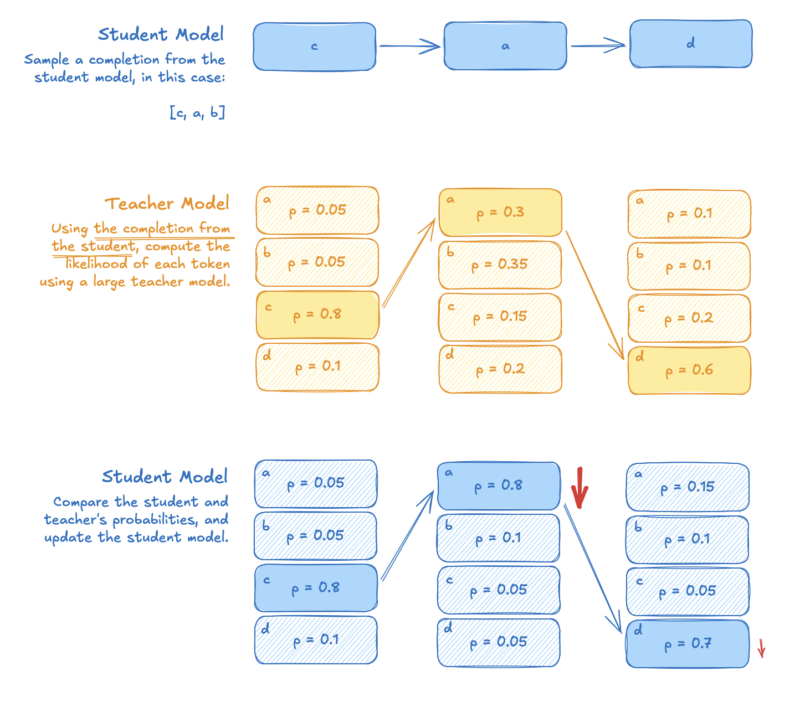
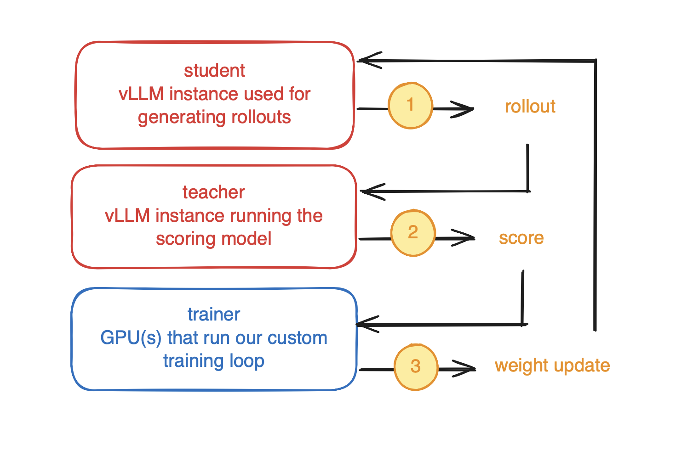
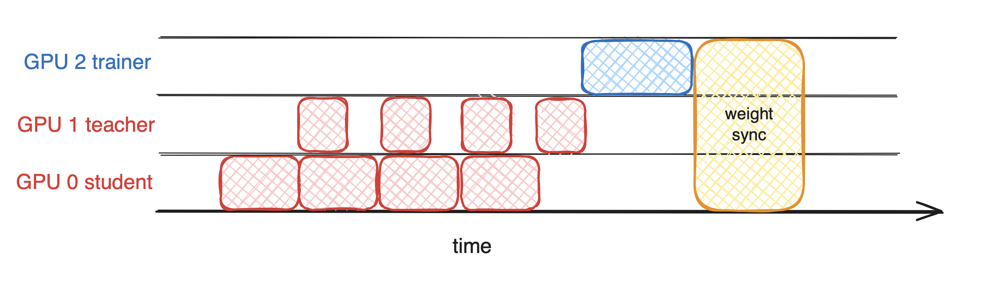

reinforcement learning
On Policy Distillation from Scratch
Build your own distributed On Policy Distillation (OPD) training setup from scratch.
In this tutorial I show how to build a distributed On Policy Distillation (OPD) training setup using transformers and vLLM.
I hope to fill a perceived void in the OPD universe: if I were an interested graduate student/researcher, how can I start experimenting?
This is necessarily a more engineering-focused approach than many other articles and papers.
In the end, the training setup will allow you to use heterogeneous and distributed hardware to train a student model using a large teacher model. The Thinking Machines blogpost1 on OPD makes it feel tantalizingly straightforward to implement. Personally, I think it makes for an excellent weekend project!
The code in this article is a skeleton (that’s runnable with a little work on your part). If you want, the full runnable code lives here: https://github.com/jbarrow/nanopd.
What is On-Policy Distillation?
If you aren’t familiar with OPD, I think you’re best served by reading the Thinking Machines blogpost1, and/or the GKD2 and MiniLLM3 papers. For our purposes we’re going to use the following definition:
On-Policy Distillation is a reinforcement learning technique that uses a teacher model to score each token generated by a student model to train the student model.

In standard reinforcement learning from human feedback (RLHF) or reinforcement learning from verifiable rewards (RLVR), the entire generation gets a single score. This sparse learning signal is effective, but inefficient. With supervised fine-tuning (SFT), you get dense, token-level supervision, but you don’t benefit from the evaluative nature of reinforcement learning.
OPD is both evaluative (meaning that you’re scoring what the student model generates, not instructing it what to generate) and dense.
Loss
What do we need to implement?
I annotated 4 parts of the definition above, because they’re instructive for how we build a training pipeline:
- teacher model — a large model whose performance we want to match; in our case we’re going to be using Qwen3.5-2B.
- student model — the small model we’re interested in improving; in our case we’re going to be using Qwen3.5-0.8B.
- generating rollouts — OPD requires that we generate rollouts from the student; in our case that’s going to be prompt completions.
- scoring each token — OPD teaches the student by scoring its generations using a large teacher model.
- a training loop for the student – we need to update the weights of the student model, which will be used to generate the next set of rollouts.
We’re going to need: a way to serve a teacher model that returns scores, a way to serve a student model generate rollouts, and a way to train the student model so we can use the new weights in the next set of rollouts.
Overall Architecture
To accomplish the above, we’re going to build a setup that uses 3 GPUs:
- a GPU (or cloud instance, or DGX spark, or Mac) for serving the student
- a GPU (or cloud instance, or DGX spark, or Mac) for serving the teacher
- a GPU for training
We’re going to be using vLLM (an inference engine) for (1) and (2), and then roll our own training loop for 3. After each training step we are going to send the updated model weights to our student vLLM instance(s). The overall architecture at the end will look like this:

Student and Teacher Setup
There is one command each for getting the student and teacher running.
Student:
VLLM_SERVER_DEV_MODE=1 vllm serve ${STUDENT_MODEL} \
--weight-transfer-config '{"backend": "nccl"}' \
--port ${STUDENT_PORT} \
--no-enable-prefix-caching \
--gpu-memory-utilization 0.8 \
--port 8000
A few notes on this command: There are a lot of flags set here, so I wanted to justify them:
VLLM_SERVER_DEV_MODE=1and--weight-transfer-config '{"backend": "nccl"}'– this flag is necessary to allow us to sync fresh weights to the student model from our training loop--no-enable-prefix-caching– if we cache shared KV’s between requests, we’ll be serving an updated model stale KV cache weights--gpu-memory-utilization 0.8– we need to leave space on the GPU for weight transfers
Teacher:
vllm serve Qwen/Qwen3.5-2B --port 8001
The teacher is a bit simpler than the student, since we don’t need to enable any machinery around weight syncing and we’re totally okay with prefix caching. We mostly just need to ensure it’s on a different port so we can address it differently.
Computing and Scoring Rollouts
Now that we have a student and teacher server running, we need to be able to sample rollouts from the student and score them with the teacher. For this, we need to first run a prompt through the student and get the generation.
This is really the core of our OPD implementation. Everything else flows out of this: the loss calculation just uses the logprobs returned, the training loop just updates the weights and sends the updates back to the student vLLM instance.
from openai import AsyncOpenAI
student_client = AsyncOpenAI(
base_url=urljoin(config.student_address, "v1"),
api_key="(empty)")
teacher_client = AsyncOpenAI(
base_url=urljoin(config.teacher_address, "v1"),
api_key="(empty)")
async def rollout(item: str) -> dict[str, list]:
# we use the return_token_id's argument to avoid retokenization drift;
# for more info, check out:
# https://vllm.ai/blog/2025-10-22-agent-lightning
#
# we return the logprobs from vllm (even though we technically don't need
# to), to monitor any diff
completion = await student_client.chat.completions.create(
model="Qwen/Qwen3.5-0.8B",
messages=[{"role": "user", "content": item}],
max_tokens=config.max_tokens,
logprobs=True,
extra_body={"return_token_ids": True, "top_k": -1},
temperature=1.0,
top_p=1.0
)
prompt_ids = completion.prompt_token_ids
token_ids = prompt_ids + completion.choices[0].token_ids
teacher_response = await teacher_client.completions.create(
model="Qwen/Qwen3.5-2B",
prompt=token_ids,
max_tokens=1,
extra_body={"prompt_logprobs": 0},
)
teacher_logp = [
0. if token is None else next(iter(token.values()))["logprob"]
for token in teacher_response.choices[0].prompt_logprobs
]
return {
"token_ids": token_ids,
"attention_mask": [1]*len(token_ids),
"completion_mask": [0]*len(prompt_ids) + [1]*len(completion.choices[0].token_ids),
"student_logp": [0.]*len(prompt_ids) + [token.logprob for token in completion.choices[0].logprobs.content],
"teacher_logp": teacher_logp,
}
There are a few things to note about this code.
- We’re making use of Python’s async/await functionality to be able to send multiple rollouts in parallel.
- The teacher call generates 1 token, because all we really want is a single forward pass to score the “prompt” tokens (the student’s generation). Note that this is going to be a very compute-bound operation.
- We’re using the exact token ids returned by the student to compute the teacher logprobs. If you send a structured/chat prompt to vLLM for the teacher, you’re going to have problems.
Training Loop
Now, a sketch of our training loop:
import asyncio
import torch
import torch.nn.functional as F
from torch.nn.utils.rnn import pad_sequence
from transformers import AutoModelForMultimodalLM
async def main():
model = AutoModelForMultimodalLM.from_pretrained("Qwen/Qwen3.5-0.8B", device_map="cuda")
optimizer = torch.optim.AdamW(model.parameters(), lr=1e-5)
engine = initialize_engine(model, config) # 📌[1]
engine.send_weights() # 📌[2]
for batch in dataset.iter(batch_size=config.batch_size):
# we want to do 4 rollouts per prompt
samples = await asyncio.gather(*[rollout(p) for _ in range(4) for p in batch["prompt"]])
batch = {
k: pad_sequence([torch.tensor(s[k]) for s in samples], batch_first=True).cuda()
for k in samples[0]
}
loss = compute_loss(batch, model) # 📌[3]
optimizer.zero_grad()
loss.backward()
optimizer.step()
engine.send_weights() # 📌[4]
print(f"loss={loss.item():.4f}")
asyncio.run(main())
Outside of the weird engine calls, there’s nothing crazy in here; it’s a standard training loop.
We compute the loss, zero the gradients, backpropagate the loss, and then take an optimizer step.
The magic that makes this all work is what we do next, weight syncing.
Weight Syncing (📌[1], 📌[2], 📌[4])
Once we have an updated student, we need to ensure that its weights are synced to our inference engine, so future rollotus remain on policy. This prevents training on a stale policy.
You’ll note in the above section, there are 📌’s in the initialize_engine() call and the engine.send_weights().
initialize_engine() gives is the below function to get a weight transfer engine from vLLM, which will allow us to send updated weights to the running server.
from vllm.distributed.weight_transfer import (
ModuleSource,
HTTPVLLMWeightSyncClient,
WeightTransferTrainerFactory,
)
from vllm.utils.network_utils import get_ip, get_open_port
from vllm.distributed.weight_transfer.nccl_engine import (
NCCLTrainerInitInfo,
)
def initialize_engine(n_student_workers: int = 1):
engine = WeightTransferTrainerFactory.trainer_init(
init_info=NCCLTrainerInitInfo(
master_address=get_ip(),
master_port=get_open_port(),
world_size=1+n_student_workers,
rank=0,
packed=True,
),
client=HTTPVLLMWeightSyncClient("http://localhost:8000"),
source=ModuleSource("Qwen/Qwen3.5-0.8B"),
)
return engine
That actual WeightTransferFactory.trainer_init call appears to be a doozy.
It’s how we configure our training loop to talk to vLLM and sync the weights.
We’re using NCCL to communicate, and we have to give our IP address and an open port.
If you take the config on faith, then weight syncing is pretty easy, just an engine.send_weights() call!
The very first call resets the weights to the initial model – if you don’t do this then you risk using a trained model between runs!
Reverse-KL Loss (📌[3])
Above, I had stubbed a compute_loss() function without implementing it.
The OPD loss deserves its own section.
Our loss function is based on a per-token reverse-KL, that is:
The code for this is:
def compute_loss(batch, model):
ids = batch["token_ids"]
logits = model(input_ids=ids, attention_mask=batch["attention_mask"]).logits[:, :-1]
logp = -F.cross_entropy(logits.float().transpose(1, 2), ids[:, 1:], reduction="none")
# per-token negative reverse KL, used as the advantage
advantage = batch["teacher_logp"][:, 1:] - batch["student_logp"][:, 1:]
mask = batch["completion_mask"][:, 1:]
loss = (-logp * advantage * mask).sum() / mask.sum()
return loss
Monte Carlo KL-Divergence Estimation
One reasonable question might be: why aren’t we computing the full KL between the student and teacher? We’re only looking at the logprobs of the sampled token.
It turns out that doing this has the same mean, but higher variance when compared with computing reverse KL against the full teacher distribution. However, using the full distribution would punish the network, which we’re using to pass the logprobs back.
In practice, we can get perfectly good results using just teh sampled token. It is possible to reduce the variance using the top-k tokens instead of just the top-1, which I leave as an exercise to you.
Proof of Life
If we run the nanopd train script on gsm8k, can we actually improve a model?
Yes!
| Qwen3.5-2B | Qwen3.5-0.8B | Qwen3.5-0.8B OPD |
|---|---|---|
| 65% | 54% | 58% |
Very neat, even with short training without any gold labels, we start to recover math performance on GSM8K! Remember, we’re exclusively using the student rollouts and a teacher model.
Also a neat result because Qwen is already a strong model for its size!
Heterogeneous Hardware
I keep alluding the “heterogeneous hardware;” what exactly does that mean here? Well, you can run the teacher and student on completely different machines and training will still work!
For instance, you can run vLLM on a Modal instance, and just modify the training script to point to it instead of localhost.
You can also run the generator or scorer on AMD GPUs, DGX Sparks, or (if you have infinite patience) CPUs.
This is wholly enabled by using an inference engine like vLLM to do the generation and scoring.
GPU Bubbles
The way that this is implemented leaves some GPUs idle while others are working:

In terms of a “from-scratch” implementation, this isn’t too bad! In this setup, we’re ensuring that every sample is on-policy, with the latest policy. To really maximize compute, we can consier sampling off-policy, which in our case really just means “generate samples from a slightly older model state.”
Unfortunately, pptimizing GPU utilization is out of the scope of this blog post.
Where to Go From Here
If you enjoyed this there are several natural extensions that I think are interesting. First, scaling the teacher and student models. Does a stronger teacher improve performance on your dataset of choice? When you scale them, you will run into fun new issues, like needing to run vLLM tensor-parallel across multiple GPUs. Second, you should experiment with heterogeneous hardware. The GPU that makes a good teacher scorer is different than the GPU that makes a good student generator. Try a service like modal, running teacher, student, and trainer on different hardware configurations. There is a lot of efficiency left on the table.
There are also several interesting lines of research that follow from this:
- Optimizing GPU utilization and making use of off-policy samples, which will teach you about importance sampling, hardware profiling, and hard lessons in distributed systems.
- On-Policy Self Distillation asks “what if the teacher is the same as the student model, but with the answer (or some other privileged information) in the prompt?”
- DeltaCompression aims at making the weight sync more efficient; it turns out that you can send a compressed version of the weight diffs rather than the full weight diffs.